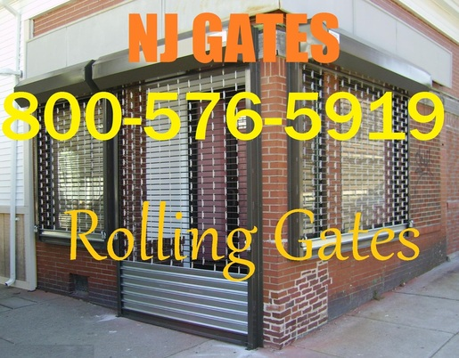
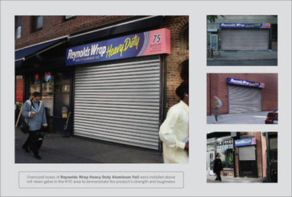
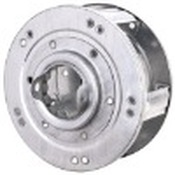
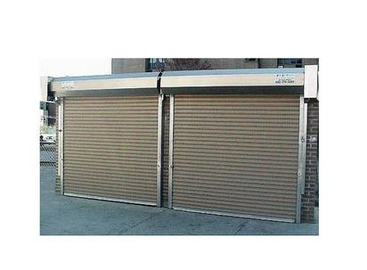

Rolling Gate - Installation, Repair and Maintenance
Rolling Gate - Installation, Repair and Maintenance
Roll Up Gates for Stores - Local Quick Service Call Us NOW

NJ Gates provides
Manual roll up and Automatic roll up gates services for storefronts and underground parking garages for businesses throughout new jersey .
We offer
NJ Gates are
specialized roll up and roll down gates professionals and have many years of experience in providing business in NJ with our roll up and roll down gates installations and replacements. For more information on our roll up and roll down gates services please call us toll free at 800-576-5919 or get a FREE Estimate.
Storefront Installations and Repairs
NJ Gates is a
local based Gates company that specializes in storefront security. We have been installing, repairing and maintaining storefront gates, roll up doors and security grills for doors in New Jersey.
We respond immediately
to repair all storefront gates no matter how large or small the project might be. Our employees are trained and experienced in all of our storefront gate services.
Storefront Gate Installations/ Repairs in NJ
NJ Gates provides full storefront gate servicing for all of New Jersey. We install, repair, maintain and service storefront gates for stores, parking garages and loading docks throughout New Jersey.
Our storefront gates will keep your business safe from any break-ins.

We have modified
also virtually eliminated making our aluminum cantilever slide gates one of the safest in the industry. Gate frames feature welded aluminum construction and feature vertical, horizontal, and diagonal support to maintain structural integrity. Aluminum slide gates may be used manually or automated with an assortment of gate operators and access control devices.
Our Storefront Gates Service Includes:
- Roll up storefront gate installations
- Storefront gate repairs in NJ
- Removal and disposal of old storefront gates
- Key switch installations for storefront gate
- Maintenance of storefront gate springs
- Lubrication for storefront gates
- Security grills for storefronts and windows
- Repairing motors for storefront gates
- Serving all of NJ
When you have problems with storefront gates, please call Safe House Locksmith at
800-576-5919
and we will send our repair staff to your location right away!
Steel Rolling Door Torsion Springs

The torsion springs on steel rolling doors work the same way as other torsion springs in the garage door industry. When the door is closed, the spring is wound. The spring is secured to a spring anchor bracket on one end and to the shaft on the other. When the steel rolling door opens, the spring in the barrel supports most of the door weight. The remainder of this weight is lifted by the chain hoist or the operator.
As the steel rolling door opens, the slats wrap around the barrel. Meanwhile, the torsion spring unwinds. When the door is fully open, there is still a small amount of tension in the spring to keep the door from unrolling.
New Jersey Gates repair , Rolling Gate repair storefront gate fin NJ gates repair install gate , gate operator , gate service , lubrication gates. roll up gate roll down gates new jersey gate 24/7 , 24 hour gate services
While the door opens, the moment arm (the distance between the center of the shaft and the point on the door that is starting to be wrapped around the barrel) increases. This means that the apparent weight of the door does not decrease as rapidly when it opens. As a result, steel rolling doors typically do not balance well in the middle of their travel. This has to be sacrificed to allow the door to stay down when it is closed and stay up when it is open.
When torsion springs are wound, they grow in length. Since both ends of the torsion springs on steel rolling doors are secured and cannot move, the spring cannot grow in length. There are two options for fixing this problem. You can stretch the spring yourself with a come-a-long before you secure it to the shaft, or your can purchase pre-stretched springs. This allows the coils to be gapped and to lose most of this gapping when the door closes.
Determine What Steel Rolling Door Torsion Springs You Need
It is very important that you order the proper torsion springs for your steel rolling door. The measurements you will need to make must be accurate, or else your door will not operate properly as it did before your spring broke.
How to Measure Your Torsion Spring There are five characteristics of your broken torsion spring that you will need to determine in order to purchase a new spring. You need to measure the length and wire size of the spring, determine the inside diameter and wind, and identify the type of ends on the spring.

To determine the wire size, you will need to measure the length of 10 coils and of 20 coils. If your spring is gapped in order to keep the coils from binding, you will need to compress the coils to make this measurement. You also need to compress the spring to measure its length, which is the distance from the last coil on one end of the spring to the last coil on the other end. You must compress the torsion spring and not include the gap between the broken pieces of the spring to properly measure your spring.
There is usually a marking on the cones of the spring to identify the inside diameter. If this identification cannot be found, you can measure the space inside the coils. Your spring will either be left or right wind. See our Torsion Spring FAQ's to determine the wind of your spring.
Lastly, you will need to identify how the torsion spring is shaped at the ends. There are primarily two types of spring ends for torsion springs on steel rolling doors. The ends of some springs wrap into the spring cones. If this is the case, you will need to order special straight ends and heat the wire to wrap it into the cones. Other steel rolling doors use torsion springs with a loop at each end. If you have this type of a spring, you will need to order it with steel rolling door loops.
Visit our DIY Instructions page to learn how to measure your torsion springs.
Replace One Spring or All of the Springs? If your steel rolling door has multiple springs, we strongly advise you to replace all of the springs at once. If one spring breaks, there is a good chance that the other springs will break within the next couple of months. Replacing all of your springs at once takes much less time than individually replacing the springs. This will also reducing shipping costs. For more information, visit our Torsion Spring FAQ's page.
Note: If you have multiple springs, you will need to measure each one of them. The springs do not always have the same dimensions, so you will need to determine this for each spring.
New Jersey Gates repair , Rolling Gate repair storefront gate fin NJ gates repair install gate , gate operator , gate service , lubrication gates. roll up gate roll down gates new jersey gate 24/7 , 24 hour gate services